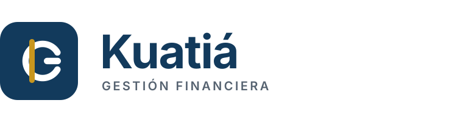
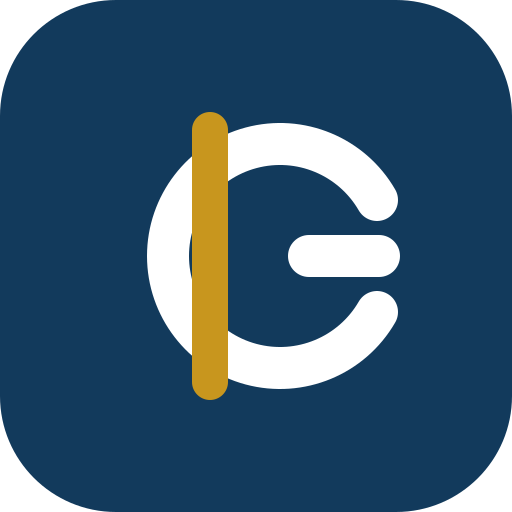
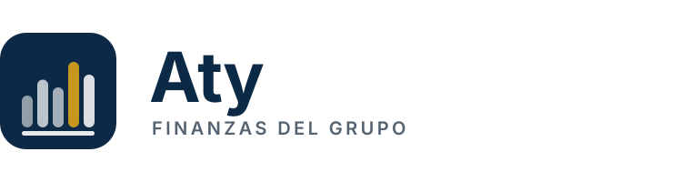
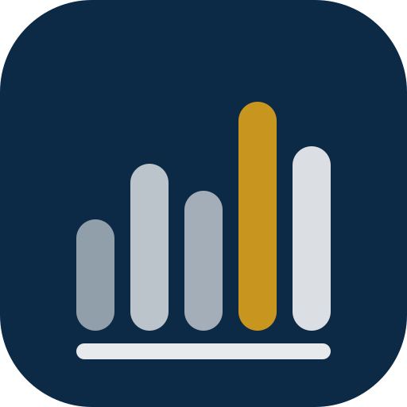
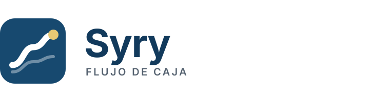
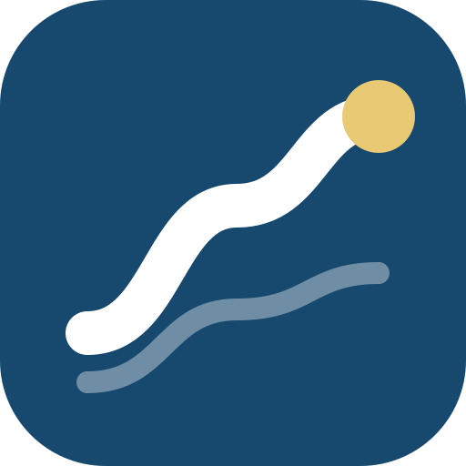

Los tres nacen del mismo sistema: azul tinta (confianza, extrato bancario), oro guaraní (el acento que señala lo importante) y geometría simple que sobrevive a 16 px. Los tres nombres están en guaraní — corto, pronunciable en castellano, y de un país que el cliente reconoce como propio.
Idea: el símbolo ₲ construido como un sello de registro. El trazo dorado vertical es a la vez la barra del guaraní y el lomo del libro contable: lo que antes vivía en una hoja suelta ahora tiene lomo, orden y memoria. Tono: institucional, sobrio, bancario. Es el más conservador de los tres y el que mejor le habla a un contador.


Reconocimiento inmediato de «dinero paraguayo». Funciona en blanco y negro, en un sello y en una factura impresa.
El símbolo ₲ es de uso público: hay que cuidar que el trazo dorado sea distintivo, o se parece a cualquier ícono de moneda.
El producto se vende como sistema serio de gestión para el grupo, y el interlocutor es el dueño o el contador.
Idea: cinco barras, cinco empresas, apoyadas en una misma base. La cuarta, en oro, es la que se está mirando: la marca cambia de acento según la empresa activa, y las cinco juntas son el consolidado. Tono: claro, moderno, de dato. Es el único de los tres que dice «grupo» sin explicarlo.


Cuenta la promesa central —ver las cinco empresas juntas— sin una sola palabra. Escala bien y se anima con naturalidad.
El gráfico de barras es territorio común de todo software de dashboards; la diferenciación depende del color y del ritmo de las alturas.
El valor que se quiere vender es la visión consolidada del grupo, y el producto puede crecer hacia otros clientes multiempresa.
Idea: la corriente del dinero subiendo. El trazo grueso es el flujo proyectado; la línea tenue de atrás es lo que ya pasó, la historia que hoy vive en papel. El punto dorado es el saldo al que se llega: el número que el dueño busca cada mañana. Tono: ligero, cercano, menos «sistema» y más herramienta diaria.


Es el más amable de los tres: nombra el beneficio (el dinero fluye y se ve) en vez del artefacto.
La línea ascendente es lugar común del software financiero. La diferencia está en el trazo grueso, la corriente de fondo y el punto dorado — y en que promete subida, cuando no toda semana sube.
La prioridad es que la gente que viene del papel sienta el producto liviano y no intimidante.
· Los textos de los lockups usan Inter. En la versión final hay que convertirlos a trazos (outlines) para no depender de la fuente instalada.
· Área de protección: media altura del ícono en los cuatro lados. Tamaño mínimo del lockup: 120 px de ancho.
· Verificar disponibilidad del nombre en la SET y en dominios .com.py antes de decidir.
· El acento dorado nunca se usa en la interfaz para representar dinero: es color de marca, no de valor.